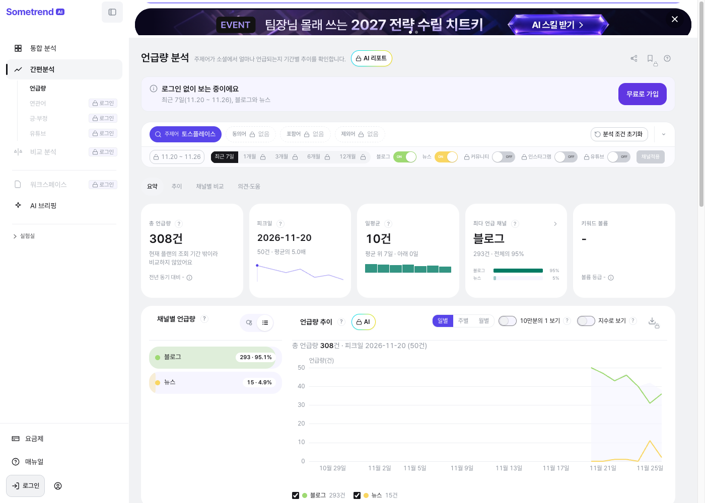
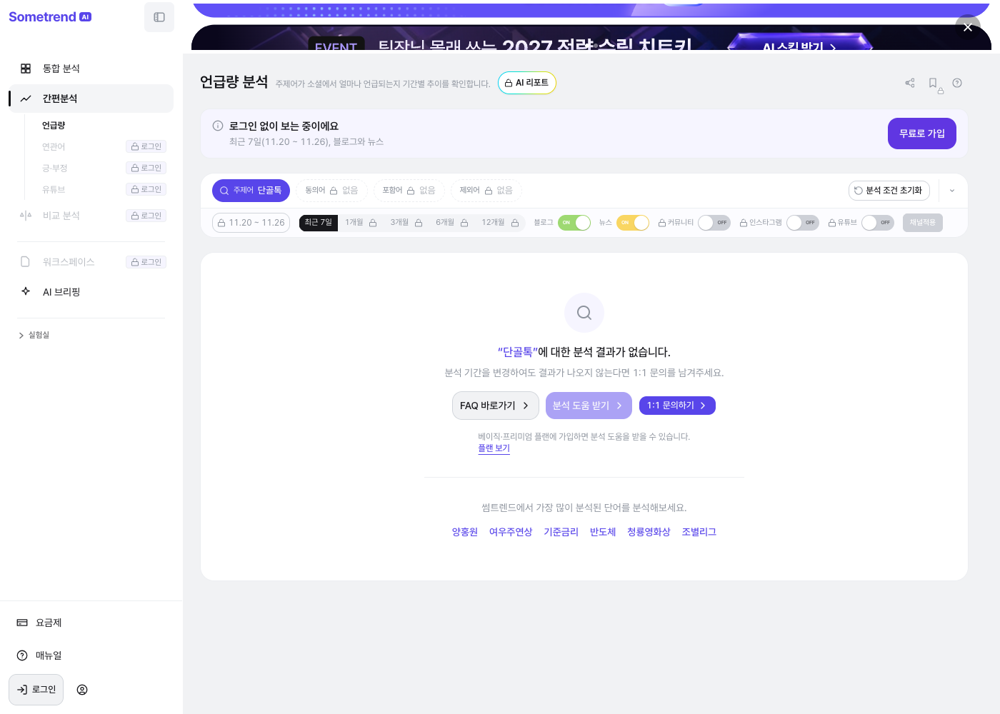
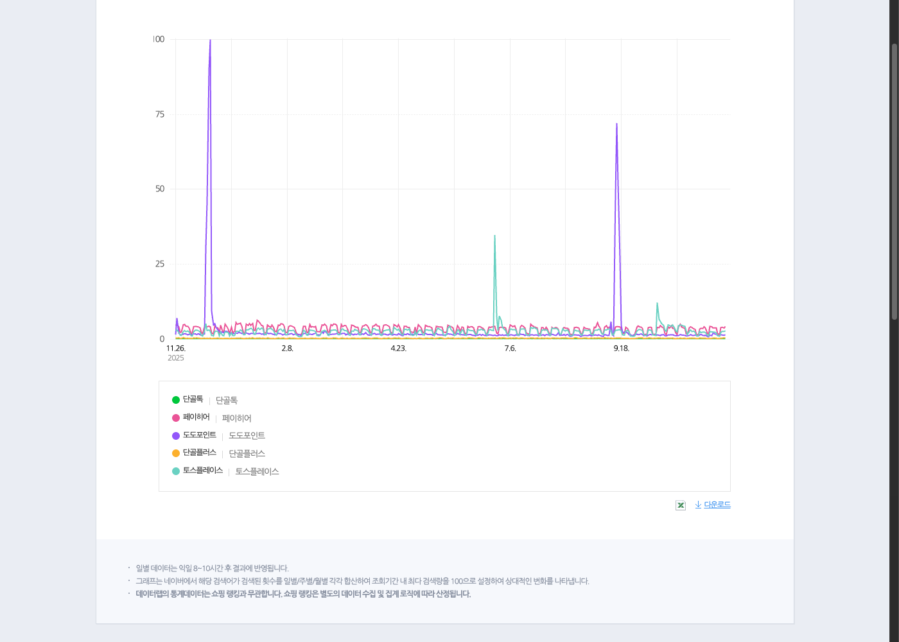
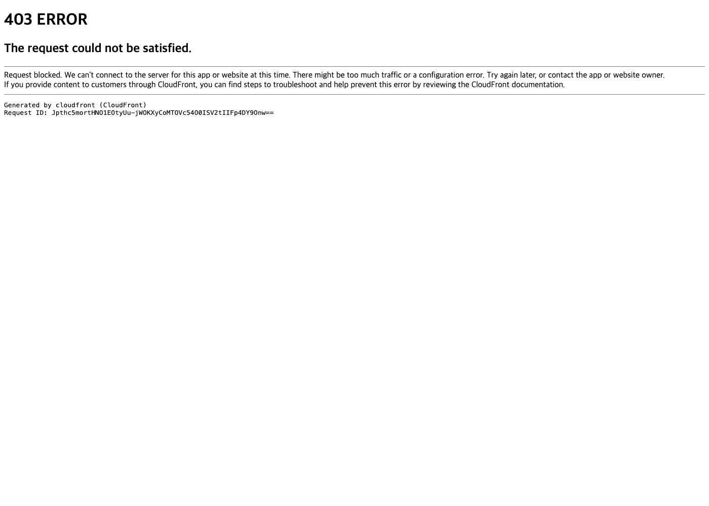

경쟁사가 어디서 얼마나 언급되는지, 광고비를 얼마나 쓰는지 알려 주는 기존 툴 11개를 공식 문서로 확인하고, 로그인 없이 되는 범위에서 경쟁사를 직접 조회했습니다. 조회일 2026-11-27.
회의 요구는 두 가지였다. ① 경쟁사가 어디서(사이트·카페·블로그·SNS) 얼마나 언급되는지, ② 광고비 집계. 툴 11개를 공식 문서로 확인했고, 로그인 없이 되는 범위에서 경쟁사를 직접 조회했다. 상세 근거는 listening.json, 화면은 shots/listening/에 있다.
| 경쟁사 | 검색어 | 언급량 | 채널 |
|---|---|---|---|
| 토스포스 쿠폰 | 토스플레이스 | 308건 | 블로그 293 · 뉴스 15 |
| 도도포인트 | 도도포인트 | 55건 | 블로그 55 |
| 페이히어 | 페이히어 | 26건 | 블로그 26 |
| 단골플러스 | 단골플러스 | 1건 | 블로그 1 |
| 단골톡 | 단골톡 | 0건 | 언급 없음 |
| 툴 | 네이버 카페·블로그 | 광고비 추정 | 무료 | 유료 |
|---|---|---|---|---|
| 썸트렌드 | 예 (카페는 비즈니스만) | 아니오 | 비로그인 7일, 가입 시 1개월 블로그·뉴스 | 베이직 29,700원 / 프리미엄 149,000원(30일) / 비즈니스 200만 원(월) |
| 리스닝마인드 | 아니오 (검색 인텐트) | 아니오 | 7일 체험(가입) | 72만 원부터 (월) |
| 블랙키위 | 미확인 | 아니오 | 확인 못 함 | 13,800원부터 (30일) |
| 네이버 데이터랩 | 아니오 (검색량) | 아니오 | 전부 무료, API 하루 1,000회 | 무료 |
| 네이버 키워드 도구 | 아니오 | 아니오 | 광고 계정 로그인 필요 | 미확인 |
| Similarweb | 아니오 | 예 (Google·디스플레이) | 상위 수준 샘플 | 영업 문의 |
| Semrush | 아니오 | 예 (Google Ads) | 하루 10리포트(가입) | $139부터 (월) |
| SpyFu | 아니오 | 예 (Google Ads) | 미확인 | $33부터 (월) |
| Ahrefs | 미확인 | 미확인 | Traffic Checker(CAPTCHA) | $129부터 (월) |
| 모바일인덱스 | 아니오 (앱만) | 아니오 | 가입 후 일부 | 원문 가격 미확인 |
| 와이즈앱 | 아니오 (앱만) | 아니오 | 예시 앱 3개 | 300만 원부터 (월) |
광고비 집계는 살 수 있는 툴이 없다. 봇이 직접 만들어야 하는 영역이다. 예를 들어 네이버 검색 결과의 파워링크 노출 여부를 주기적으로 기록하고, 키워드 도구의 클릭 단가를 곱해 추정하는 방식이 있다. 이 방식은 아직 검증하지 않았다.
| 툴 | 출처 번호 |
|---|---|
| 썸트렌드(Sometrend) | [1][2][3] |
| 리스닝마인드(ListeningMind) | [4][5] |
| 블랙키위(Blackkiwi) | [6][7] |
| 네이버 데이터랩 검색어트렌드 | [8][9] |
| 네이버 검색광고 키워드 도구 | [10] |
| Similarweb | [11][12] |
| Semrush | [13][14] |
| SpyFu | [15] |
| Ahrefs | [16][17] |
| 모바일인덱스 INSIGHT | [18] |
| 와이즈앱·리테일 | [19][20] |




전체 캡처 22장은 저장소 competitors/tracking/shots/listening/에 있습니다.
각 출처 아래 인용은 조사 때 원문에서 그대로 옮긴 문장입니다(출처당 최대 3개).
유튜브 · 네이버·다음 카페
누구나 무료로 최근 1개월의 블로그, 뉴스 채널을 분석할 수 있습니다.
149,000
여기까지는 로그인 없이 볼 수 있어요
*제공 데이터: X(트위터), 인스타그램, 블로그, 뉴스, 커뮤니티/카페, 유튜브
₩720,000
위한 7일간의 체험 플랜
네이버와 구글 검색량을 함께 보고, 미국·일본 시장도 같은 API로 조회할 수 있습니다.
13,800
네이버 키워드 분석 10회 / 1분
검색 결과와 AI 답변에서 가장 영향력 있는 웹사이트, 블로그를 알아보세요.
검색어트렌드 네이버통합검색에서 특정 검색어가 얼마나 많이 검색되었는지 확인해보세요.
통합 검색어 트렌드 API의 하루 호출 한도는 1,000회입니다.
키워드 도구는 [네이버애즈 > 검색광고 > 도구 > 키워드 도구]
조회된 연관키워드의 월간검색수/월평균클릭수/클릭률 등 상세 데이터를 참고하여 키워드를 선별할 수 있습니다.
Free data on Similarweb.com is a high-level sample of what we offer and shows a limited set of features without deeper drill downs.
You can also purchase the Similarweb API as a standalone product without a full platform subscription.
Track cross-channel ad spend
10 reports per day across all vital tools
instead of $139 monthly
Advanced API data integration
This view reveals estimated ad spend during the chosen timeframe.
Membership starts at just $33/month.
Catch changes in ad spend over time.
Build with the SpyFu API
Break down any site’s traffic across 10+ channels: organic, paid social, referral, direct, AI, email, social, and more.
129 /mo
API and MCP access
회원가입 후 제공 데이터로 모바일인덱스의 일부 데이터를 먼저 확인할 수 있습니다.
모바일인덱스 Insight의 모든 데이터는 안드로이드 및 iOS 기기 기준 데이터이며, Web 데이터는 포함되지 않습니다.
12개월 이용을 약정하고 월 이용료 50% 할인 적용
앱의 설치자, 사용자, 사용시간, 사용일수, 실행횟수, 사용연령 등 제공
월 3,000,000원 (부가세 별도)
본 정보는 표본조사를 통해 한국인의 사용행태에 대한 통계적 추정치를 제공하는 것입니다.